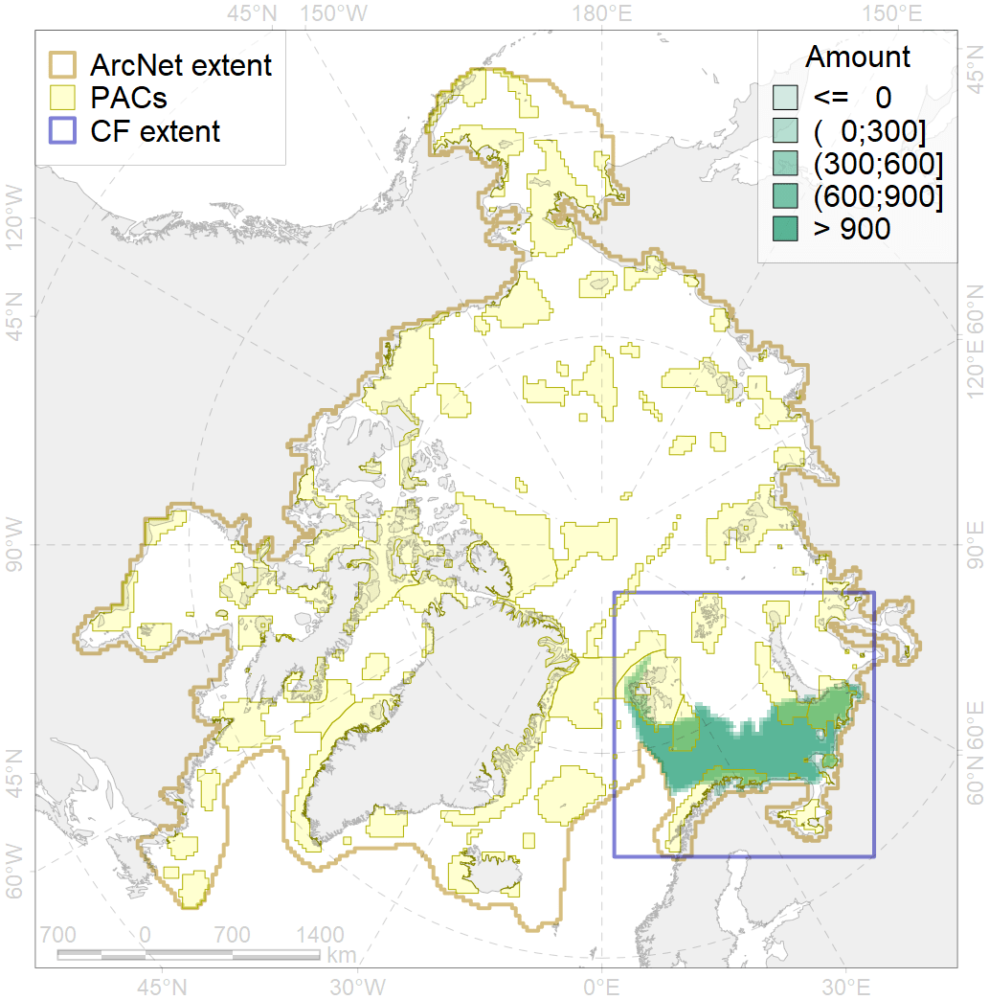
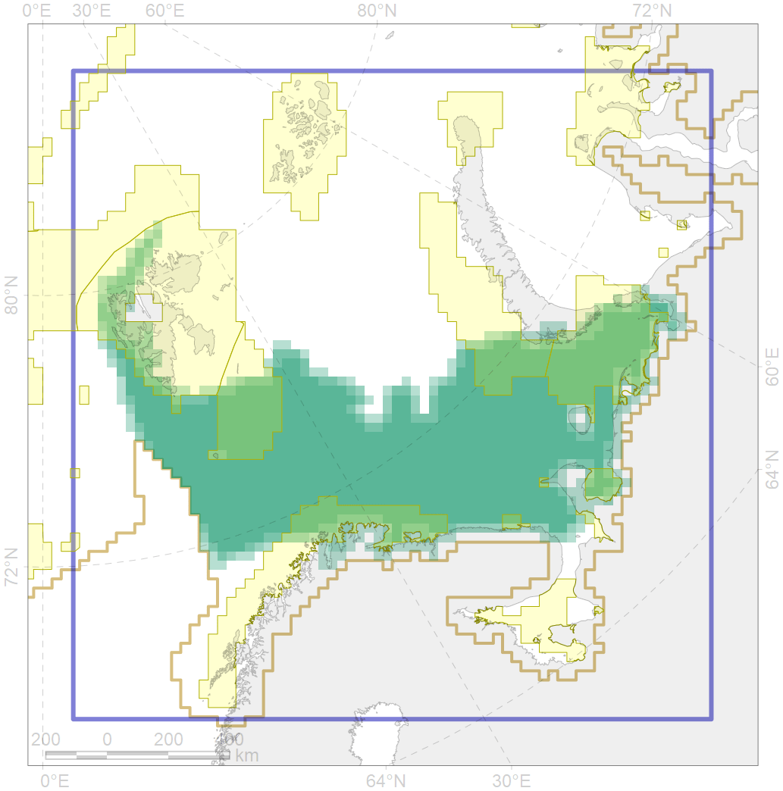

4094

| CF code | 4094 |
| CF name | Subarctic fish complex of the Barents region |
| Time Period | 2007 |
| Source(s) | Bogstad et al., 2008 |
| Seasonality | July-October |
| Depth Horizon | |
| Methodology | field observations: bottom trawl survey |
| Use Restrictions | original paper was published for Open access |
| Author Name | N. Chernova |
| Notes | |
| Scenario’s Target | 0.06 |
| Target Achievement | 0.324 (Scenario: 539.5%) |
| PAC | Share of the Total Amount within the PAC | Share of the Target Achievement for the ArcNet | PAC’s Contribution to the Target Achievement |
|---|---|---|---|
| 20 | 9.5%10.1% | 153.3%162.6% | 28.4%30.1% |
| 21 | 4.2%4.5% | 57.2%62.3% | 10.6%11.5% |
| 23 | 1.0%1.1% | 14.8%16.5% | 2.7%3.0% |
| 24 | 0.0%0.0% | 0.1%0.4% | 0.0%0.1% |
| 25 | 0.3%0.4% | 4.3%5.8% | 0.8%1.1% |
| 27 | 5.2%6.6% | 74.8%83.2% | 13.9%15.4% |
| 29 | 0.0%0.0% | 0.0%0.5% | 0.0%0.1% |
| 30 | 3.7%3.8% | 60.5%61.7% | 11.2%11.4% |
| 31 | 6.0%6.0% | 92.3%92.9% | 17.1%17.2% |
| inner | 29.9%32.6% | 457.4%485.8% | 84.8%90.1% |
| outer | 70.1%75.1% | 82.1%151.3% | 15.2%28.1% |
| † supplement values are for area consistence whereas principal values are for Accenter compatible gridded stats |